L-BFGS-B Optimization
This example is using NetLogo Flocking model (Wilensky, 1998) to demonstrate model fitting with L-BFGS-B optimization method.
There are many R packages for solving optimization problems (see CRAN Task View). This example uses L-BFGS-B method with standard stats::optim function. See also Thiele, Kurth & Grimm (2014) chapter 2.28 Gradient and quasi-Newton methods.
experiment <- nl_experiment(
model_file = "models/Sample Models/Biology/Flocking.nlogo",
setup_commands = c("setup", "repeat 100 [go]"),
iterations = 5,
param_values = list(
world_size = 50,
population = 80,
vision = 6,
min_separation = seq(from = 0, to = 4, by = 0.5),
max_align_turn = seq(from = 0, to = 20, by = 2.5)
),
mapping = c(
min_separation = "minimum-separation",
max_align_turn = "max-align-turn"),
step_measures = measures(
converged = "1 -
(standard-deviation [dx] of turtles +
standard-deviation [dy] of turtles) / 2",
mean_crowding =
"mean [count flockmates + 1] of turtles"
),
eval_criteria = criteria(
c_converged = mean(step$converged),
c_mcrowding = mean(step$mean_crowding)
),
repetitions = 10, # repeat simulations 10 times
eval_aggregate_fun = mean, # aggregate over repetitions
eval_mutate = criteria( # evaluation criterium
eval_value =
sqrt((c_mcrowding - 8)^2 + 400*(c_converged - 1)^2)
)
)In this example the nl_eval_run function is used instead of nl_run.
While nl_run expects predefined parameter sets, nl_run_eval accepts a single parameter set and returns a numeric value. That makes it compatible with optimization functions from different R packages where next parameter combination depends on the result of previous simulation.
But note that nl_eval_run requires started NetLogo instance. User have to take care to initialize NetLogo and load the model before optimization begins and close NetLogo when it is no longer needed (see nl_eval_init and nl_eval_close in package documentation).
Use nl_eval_run parallel option when optimizing stochastic models with more than a few repetitions needed to evaluate one parameter set.
cl <- nl_eval_init(experiment, parallel = TRUE)
#> [1] "Creating sockets..."
trace <- nl_eval_tracer(verbose = FALSE)
param_range <- nl_get_param_range(experiment)
set.seed(1)
o_result <- optim(
#par = param_range$upper,
par = (param_range$upper + param_range$lower)/2,
nl_eval_run,
experiment = experiment, criteria = "eval_value",
call_back = trace$add, parallel = TRUE, cluster = cl,
method = "L-BFGS-B",
lower = param_range$lower, upper = param_range$upper,
control = list(maxit = 200, trace = 1))
#> final value 4.480883
#> converged
nl_eval_close(parallel = TRUE, cl)o_result
#> $par
#> min_separation max_align_turn
#> 1.877521 9.382087
#>
#> $value
#> [1] 4.480883
#>
#> $counts
#> function gradient
#> 24 24
#>
#> $convergence
#> [1] 0
#>
#> $message
#> [1] "CONVERGENCE: REL_REDUCTION_OF_F <= FACTR*EPSMCH"The trace$add function colected every iteration of optim.
tr <- trace$get()
tr$current_best <- cummin(tr$result)
library(ggplot2)
ggplot(tr, aes(x = iter_id, y = result)) +
geom_point() +
geom_step(aes(y = current_best), alpha =0.3) +
theme_minimal()

library(ggplot2)
ggplot(tr, aes(x = min_separation, y = max_align_turn)) +
geom_path(alpha = 0.1)+
geom_point(shape = 4, size = 5, alpha = 0.3) +
scale_x_continuous(limits = c(0, 4)) +
scale_y_continuous(limits = c(0, 20)) +
theme_minimal()